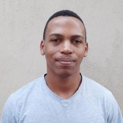

Bakoena Leqele
Mechanical & Mechatronic Engineer | Civil Engineer Technician. Currently working as a
Hardware Engineer Consultant at Nuvetech.
📧Email: bakoenabk@gmail.com
Work Experience
NUVETECH
Hardware Engineer Consultant
November 2023 - Present
Developing electronic hardware and/or firmware for projects undertaken by Nuvetech, both internal and
external projects. While also doing project management of Nuvetech various projects.
- Designed PCBs and Schematic diagrams from concept to final product.
- Developed and uploaded firmware for on the PCBs developed.
- Kept up to date with current projects, made sure they are delivered on time as according to
client's requirements.
NUVETECH
Mechanical and Mechatronic Engineer Intern
June 2022 - July 2022
Undertook responsibility of a Mechanical and Mechatronic Engineer intern in my 4th year of study as
an introduction to the Electronic design world.
- Assembled electronic boards, this included surface mount components and through hole components
- Conducted quality control and fault finding on electronic boards.
- Developed and uploaded firmware on electronic boards
- Researched the best solutions for various projects including which approach should be used to
best meet client's requirements.
LESOTHO ELECTRICITY COMPANY
Mechanical and Mechatronic Engineer Intern
January 2022 - February 2022
Took on a role of a Mechanical and Mechatronic Engineer intern doing maintainance work.
- Perfomed Transformer maintenance: Changed transformer oil, checking conditions of tap changers
and its supporting parts(eg upper gear and lower gear), changed the grease in the gears.
- Perfomed Mechanical Engineering workshop processes: Used a lathe, grinding, milling machine,
drilling machine, welding(Arc welding and tig welding), Soldering, fitting etc
- Designed and built a simple press machine as part of a team.
CIVIL ENGINEERING LABORATORY
Civil Engineer Technician Intern
August 2017 - January 2023
Conducted civil engineering works laboratory duties to ensure compliance with civil engineering
standards of various projects.
- Conducted Soil tests including CBR testing etc
- Perfomed Concrete quality control and testing including Concrete cube compressive test, slump
tests.
- Did Site investigations: this included finding out the type of soil available on site and taking
samples for lab testing.
- Documentated results of various tests.
- Wrote geological maps reports of sites.
- Operated a troxler for site soil testing to detemine the soild density and moisture content.
Educational Background
UNIVERSITY OF CAPE TOWN
Bachelor of Science in Engineering Mechanical and Mechatronic Engineering
January 2019 - December 2022
LEROTHOLI POLYTECHNIC
National Diploma in Civil Engineering
August 2015 - August 2018